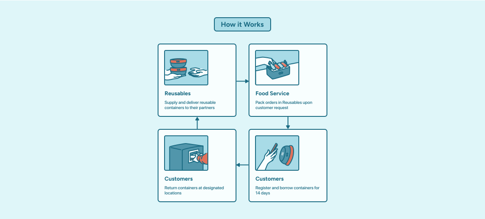
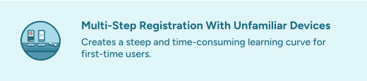
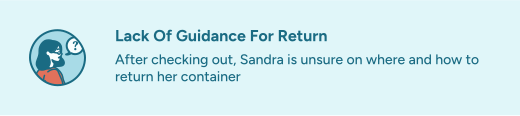
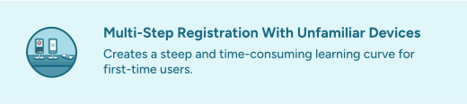
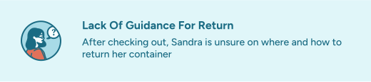
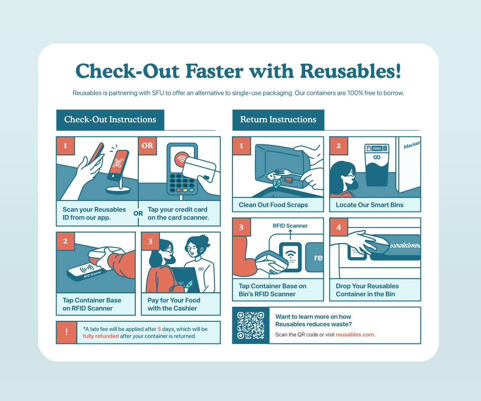
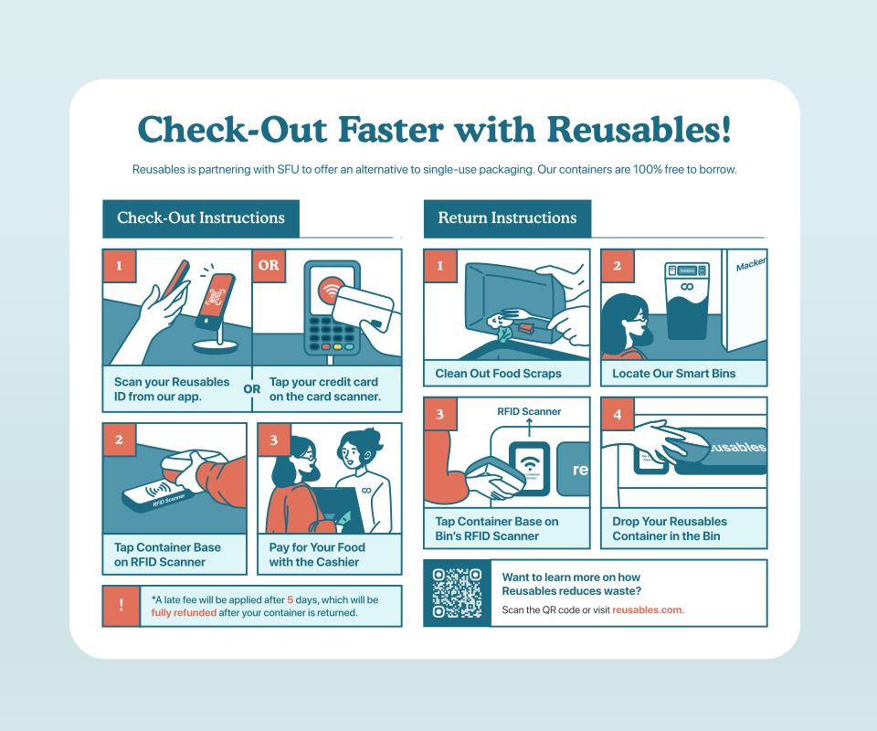

Content
Bio
Celine August
I am a UX designer and illustrator driven by values that nurture the human connection and produce environmental impact.
Vancouver

Figma, Adobe Creative Suite

Product Design, UX Research, Information Architecture, Prototyping and Illustration
Boba Drinks, Musicals
My Story
I was born and raised in Bandung, Indonesia. My parents weren't fortunate enough to receive proper college education like I do today. They were merely small business owners of a local grocery store. However, I've always dreamt of studying abroad. Despite my family's financial struggles, my dad has always supported my decision as long as I helped pay the tuition expenses by working part-time. I'm glad I did, because I've met and learned from so many amazing people with various cultures and backgrounds. My experiences in Canada have taught me a lot and made me grow as a person. The sacrifices were worth it, and they've brought me to where I am today.
Currently, I am an undergraduate student studying Interactive Arts & Technology in Simon Fraser University, where I am sharpening my skills in UX design, joining communities and leading the design team in Enactus SFU! Outside of design, I love musical theatre and art. You will often find me watching Broadway musicals, listening to R&B music, playing the piano, or belting out tunes at karaoke nights with my friends!
Case Study 1
Informative Packaging
Overview
This was an Interaction Design project where the premise was to identify a UX intervention opportunity with clear value propositions. Our client was Reusables, a container-borrowing service that operates in campuses and restaurants. I took on the product designer role, overseeing all UX research processes.
- ROLE: Product Designer, Interaction Designer, UX Researcher, Illustrator
- TOOLS: Figma, Adobe Photoshop, Adobe Illustrator
- DURATION: Jan - Apr 2023
- Christina Raganit, Alison Lu, Kasey Le
Understanding Reusables
To identify opportunities, I conducted ethnography studies at partnered restaurants to experience Reusables’ circular economy model first-hand as a user and worker. Additionally, I talked to servers to understand their behaviors when offering the program.
Ethnography Challenges & Key Insights
Unfortunately, there was difficulty in contacting restaurants for formal interviews, resulting in only brief interactions with servers and a lack of data from customers. I overcame this issue by discovering a new touchpoint and shifting the focus to Simon Fraser University’s Mackenzie Cafe. Here, I conducted in-person and remote interviews with frequent cafeteria users and found that containers were mandatory for vendors. My research led to 4 key insights:
 




Who Am I Designing For?

Therefore, I focused on designing for first-time users who are pressed for time. The scope was to streamline the registration to return process so they can easily participate in the program. This ensures that the intervention provides value across multiple interaction points. “How might we inform first-time users in a rush with Reusables instructions before, during, and after the program to facilitate a faster registration to return process?”
Informative Packaging Sleeve Solution
 

After developing the project’s scope. I conducted a brainstorming workshop and ultimately decided upon an informative label placed on top of the container. This solution ensures users have a quicker and independent experience while being able to reference the instructions consistently. To guarantee reusability, I discovered Jukebox, a company that offers Greenguard Certified and dishwasher safe stickers. This ensures that our intervention promotes sustainability and the circular economy.
Usability Testing
Finally, I conducted a prototype testing with 5 first-time users. The study revealed reduced time and human assistance needed during the experience, and an increase in future retention. These results led our client to express interest in implementing the solution.
My Takeaways
While promoting sustainable habits may add an extra step for users, I learned that simplifying processes with the user in mind is crucial for fostering widespread adoption of new practices. I've also learned the importance of thorough preparation, especially in contacting stakeholders in advance for interviews. Next time, I'll ensure better preparation to gather richer ethnographic data from various types of users.
Case Study 2
Digital Signage
Overview
In Fraser Health, screensavers are used to reduce corporate spam and keep employees informed about company news while they are away from their desks. The primary focus of this project was to create visually engaging screensavers, design templates, and establish new visual guidelines to streamline future co-op students' work processes.
- ROLE: Art Direction, Visual Designer.
- TOOLS: Figma, Adobe Photoshop
- TIMELINE: 9 Days (May 2023)
The Framework
As part of the initial design process, I collaborated with my supervisor to comprehend the requirements for each screensaver request by analyzing previous works and researching on what could be improved. This involved understanding the text contents, identifying key information to establish hierarchy, and aligning the design with our branding. Ultimately, we decided that the framework would be: headline → subheading → call to action → logo
Informational Design
The current screensavers have been ineffective in communicating their messages to internal staff due to several issues. These include inconsistent CTA placements, small QR codes that are difficult to scan, variations in logo and typography, and designs featuring bold colours that do not align with our brand's colour palette. As a result, the designs overshadow the information, making it difficult for employees to engage with the content, leading to reduced readership and impact.
Colour Palette & Typography

These are Fraser Health’s core colours and typography that should be used for balance, contrast, cohesion and brand recognition.
The Layout

After identifying pain points from the previous designs, I decided to implement the visual style guides throughout our future designs and came up with a fixed layout that provides clear and concise content tailored to our staff’s needs.
Final Templates

Ultimately, I successfully created three different templates to cater to clients with varying content requirements.
Balancing Elements

For the visual elements, I struck a balance between captivating designs and clear information delivery ensuring that screensaver graphic resonated with the content without overshadowing the essential messages. To ensure clarity and prominence, important text was highlighted using different colours or in bold formatting.
My Takeaways
By gathering feedback from staff/clients and understanding their needs, I was able to create screensavers that resonated with the target audience, fostering a more informed and connected workforce. The incorporation of visual guidelines and design templates streamlined future co-op students' work processes, ensuring consistency while leaving room for creativity. If given more time, I would explore incorporating dynamic elements into the screensavers and refine the design templates for even more efficient creation. Ultimately, I have grown both creatively and professionally from this experience, and I look forward to applying these valuable insights in future design endeavours.